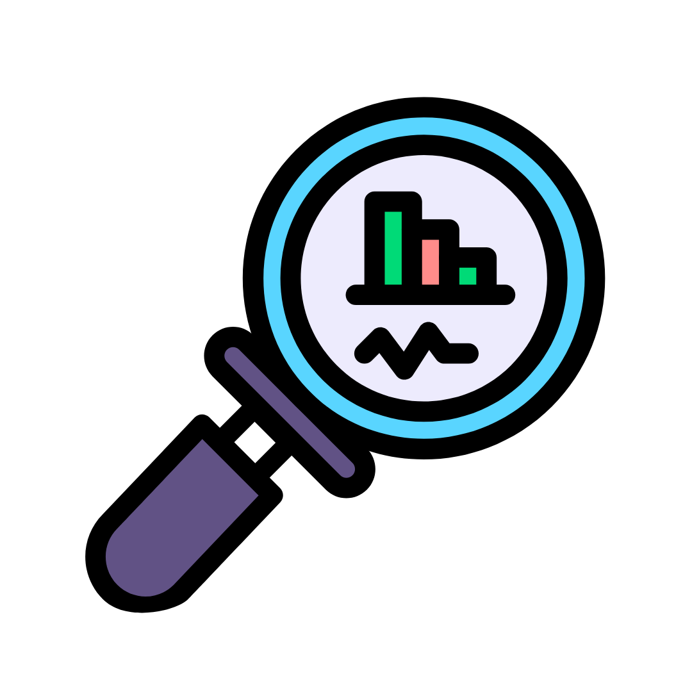

<!DOCTYPE html>
<html lang="tr">
<head>
  <meta charset="UTF-8" />
  <meta name="viewport" content="width=device-width, initial-scale=1.0" />
  <title>EcoSim - Karbon ve Su Ayak İzi Simülatörü</title>
  <script src="https://cdn.tailwindcss.com"></script>
  <script src="https://unpkg.com/react@18/umd/react.production.min.js"></script>
  <script src="https://unpkg.com/react-dom@18/umd/react-dom.production.min.js"></script>
  <script src="https://unpkg.com/@babel/standalone/babel.min.js"></script>
  <script src="https://cdn.jsdelivr.net/npm/chart.js"></script>
  <link href="https://fonts.googleapis.com/css2?family=Poppins:wght@400;600;700&display=swap" rel="stylesheet" />
</head>
 <!-- Leaflet CSS ve JS -->
<link rel="stylesheet" href="https://unpkg.com/leaflet@1.9.4/dist/leaflet.css" />
<script src="https://unpkg.com/leaflet@1.9.4/dist/leaflet.js"></script>

<body class="bg-green-50 text-gray-900 font-poppins">
  <div id="root"></div>

  <script type="text/babel">
    // Mock User Data
    const mockUser = {
      city: "İstanbul",
      livingStandard: "Orta",
      transportation: "Araba",
    };

    // Language Context
    const LanguageContext = React.createContext();

    // Translation Data
    const translations = {
      tr: {
        title: "EcoSim - Karbon ve Su Ayak İzi Simülatörü",
        navbar: {
          logoAlt: "Logo",
          home: "Anasayfa",
          calculate: "Hesapla",
          profile: "Profil",
          login: "Giriş Yap / Kayıt Ol",
          menuToggle: "Menüyü aç/kapat",
        },
        hero: {
          heading: "Geleceği Koru!",
          subheading: " Geri dönüştürme ve yeniden kullanım ile daha yeşil bir dünya için adım at!",
          button: "Hemen Başla",
        },
        bunubil: {
          heading: "Bunu Biliyor muydun?",
          fact: "Türkiye’de bir kişi yılda ortalama 4 ton CO2 üretiyor. Enerji ve ulaşım alışkanlıkları bu rakamı artırıyor.",
          carbonTitle: "Karbon Ayak İzi",
          carbonText: "Karbon ayak izi, bireylerin veya toplulukların sera gazı emisyonlarını ölçen bir göstergedir.",
          waterTitle: "Su Ayak İzi",
          waterText: "Su ayak izi, bireylerin veya toplulukların su tüketimini ölçen bir göstergedir.",
        },
        quickCalculate: {
          heading: "Geri Dönüşüm ve Yeniden Kullanım",
          subheading: "Geri dönüştürdüğünüz ve yeniden kullandığınız ürünlerle çevreye ne kadar katkı sağladığınızı görün.",
          malzeme: "Geri dönüştürülen malzeme",
          kg: "Miktar (kg)",
          yeniurun: "Yeniden kullanılan ürün (isteğe bağlı)",
          hesapla: "Hesapla(kWh)",
          co: "CO₂ Tasarrufu",
          water: "Su Tasarrufu (litre/gün)",
          energy: "Enerji tasarrufu",
          hammadde: "Hammadde tasarrufu",
          aciklama: "Ayrıca şunu yeniden kullandınız: ",
          carbonResult: (value) => `Karbon Ayak İzi: ${value} kg CO2/hafta`,
          carbonImpact: (value) => `Araç kullanımı, atmosfere karbondioksit salınımı yaparak iklim değişikliğini hızlandırır. Haftada ${value} kg CO2, bir ağacın yaklaşık 1 haftada emebileceği karbon miktarına eşdeğer!`,
          electricityResult: (value) => `Elektrik Tüketimi: ${value} kg CO2/ay`,
          electricityImpact: (value) => `Elektrik üretimi, özellikle fosil yakıtlarla yapılıyorsa, sera gazı emisyonlarını artırır. Aylık ${value} kg CO2, bir evin birkaç haftalık karbon salınımına denk gelebilir.`,
          waterResult: (value) => `Su Ayak İzi: ${value} litre/gün`,
          waterImpact: (value) => `Yüksek su tüketimi, su kaynaklarını hızla tüketir ve kuraklık riskini artırır. Günde ${value} litre su, bir kişinin temel ihtiyaçlarının birkaç katına ulaşabilir.`,
          comparison: (status, diff, unit) => `Türkiye ortalaması ile karşılaştırıldığında: ${status} (${diff} ${unit})`,
          joinPrompt: "Kayıt ol, çevre dostu önerilerle ayak izini azalt!",
          joinButton: "Şimdi Katıl",
        },
        howItWorks: {
          heading: "EcoSim Nasıl Çalışır?",
          step1Title: "1. Hesapla",
          step1Text: " Tahmini geri dönüştürerek kazandırdığın faydayı öğren",
          step2Title: "2. Öneriler Al",
          step2Text: "Size özel çevreci tavsiyeler keşfedin.",
          step3Title: "3. Takip Et",
          step3Text: "Gelişiminizi grafiklerle izleyin.",
        },
        awareness: {
          heading: "Çevresel Sorunlara Dikkat!",
          carbonTitle: "Karbon Ayak İzi",
          carbonText: "Türkiye’de bir kişi yılda ortalama 4 ton CO2 üretiyor. Enerji ve ulaşım alışkanlıkları bu rakamı artırıyor.",
          carbonGoal: "Hedef: 2030’a kadar %21 azalt!",
          waterTitle: "Su Ayak İzi",
          waterText: "Bir fincan kahve 140 litre, bir tişört 2700 litre su harcıyor! Su kaynaklarının %70’i tarımda kullanılıyor.",
          waterSolution: "Çözüm: Su tasarrufu yap!",
          climateTitle: "İklim Değişikliği",
          climateText: "Kuraklık, sel ve sıcaklık artışı Türkiye’yi tehdit ediyor. Çevre dostu alışkanlıklar şart!",
          climateAction: "Harekete geç!",
          ecosimTitle: "EcoSim ile Değişim",
          ecosimText: "EcoSim sana özel önerilerle çevreye katkıda bulunmanı sağlar. Kayıt ol, fark yarat!",
          ecosimButton: "Kayıt Ol",
          whyEcosim: "Neden EcoSim?",
          whyEcosimText: "Kayıt ol, çevre dostu öneriler al ve gelişimini takip et. Çevreyi birlikte koruyalım!",
          energyTitle: "Enerji Tüketimi",
          energyText: "Türkiye’de bir hane yılda ortalama 3.5 MWh elektrik tüketiyor. Fosil yakıtlar enerjinin %60’ını üretiyor!",
          energygoal: "Hedef: 2030’a kadar %30 azalt!",
          recyclingTitle: "Geri Dönüşüm Oranları",
          recyclingText: "Türkiye’de atıkların sadece %13’ü geri dönüştürülüyor. Bir ton kağıt geri dönüştürmek 17 ağaç kurtarır!",
          recyclingSolution: "Atıkları ayır, geri dönüşüm kutularını kullan!",
          joinButton: "Şimdi Katıl",
        },
        iknaedelim: {
          heading: "EcoSim ile Çevreyi Koru!",
          subheading: "Çevresel etkilerini azalt, sana özel önerilerle fark yarat!",
          suggestionsTitle: "Özel Öneriler",
          suggestionsText: "Yaşam tarzına en uygun çevreci tavsiyeler al.",
          progressTitle: "Gelişim Takibi",
          progressText: "Haftalık grafiklerle ilerlemeni gör.",
          experienceTitle: "Eğlenceli Deneyim",
          experienceText: "Sana özel görevlerle çevre dostu alışkanlıklar kazan.",
          communityTitle: "Topluluk",
          communityText: "Çevrecilerle deneyimlerini paylaş.",
        },
        profile: {
          heading: "Profil",
          cityLabel: "Şehir",
          livingStandardLabel: "Yaşam Standardı",
          livingStandardLow: "Düşük",
          livingStandardMedium: "Orta",
          livingStandardHigh: "Yüksek",
          transportationLabel: "Ulaşım Tercihi",
          transportationCar: "Araba",
          transportationPublic: "Toplu taşıma",
          transportationBike: "Bisiklet/Yürüme",
          submit: "Profili Güncelle",
          successMessage: "Profiliniz güncellendi! Size özel öneriler hazır.",
        },
        faq: {
          heading: "Sıkça Sorulan Sorular",
          q1: "EcoSim nasıl çevreyi korumaya yardımcı olur?",
          a1: "EcoSim, karbon ve su ayak izinizi hesaplayarak çevre dostu alışkanlıklar kazanmanıza yardımcı olur. Size özel öneriler sunar ve ilerlemenizi grafiklerle takip etmenizi sağlar.",
          q2: "Geri Dönüştürme Nedir?",
          a2: "Geri dönüştürme, kullanılmış malzemelerin toplanarak yeni ürünlere dönüştürülmesi işlemidir. Plastik, kağıt, cam ve metal gibi atıklar, çevreye zarar vermeden yeniden kullanılabilir. Bu süreç, doğal kaynakların korunmasına ve atıkların azaltılmasına yardımcı olur.",
          q3: "Yeniden Kullanım Neden Önemli?",
          a3: "Yeniden kullanım, eşyaları çöpe atmak yerine farklı amaçlarla kullanmayı ifade eder. Örneğin, cam kavanozları saklama kabı olarak kullanabilir veya eski kıyafetlerden bez çanta yapabilirsiniz. Bu, hem israfı azaltır hem de çevre üzerindeki yükü hafifletir.",
          q4: "Kayıt olmadan EcoSim'i kullanabilir miyim?",
          a4: "Evet, hızlı hesaplama aracı kayıt olmadan kullanılabilir. Ancak, kişiselleştirilmiş öneriler ve gelişim takibi için kayıt olmanız önerilir.",
          q5: "Karbon ayak izi nedir ve neden önemlidir?",
          a5: "Karbon ayak izi, bir bireyin veya topluluğun günlük aktiviteleri sonucu ürettiği sera gazı emisyonlarının toplamıdır. Bu, iklim değişikliğini hızlandıran en büyük faktörlerden biridir. EcoSim ile karbon ayak izinizi öğrenip azaltabilirsiniz!",
          q6:"EcoSim'in önerileri gerçekten etkili mi?",
          a6:"Evet! Önerilerimiz, enerji tasarrufu, su kullanımı ve ulaşım alışkanlıklarınızı optimize ederek çevresel etkinizi azaltmak için tasarlanmıştır. Küçük değişiklikler bile büyük fark yaratır!",
          q7:"Su ayak izi nasıl hesaplanır?",
          a7:"Su ayak izi, bir kişinin doğrudan (ör. içme, duş) ve dolaylı (ör. gıda üretimi, giysi) su tüketimini ölçer. EcoSim, günlük su tüketiminizi girerek tahmini bir hesaplama yapar ve Türkiye ortalamasıyla karşılaştırır.",
          q8:"Yenilenebilir enerjiyi evde nasıl kullanabilirim?",
          a8:"Güneş panelleri kurmayı düşünebilirsiniz. Ayrıca, yenilenebilir enerji sağlayan elektrik şirketlerini tercih ederek karbon ayak izinizi azaltabilirsiniz",
          q9:"Enerji tasarrufu için hangi basit adımları atabilirim?",
          a9:"Kullanmadığınız elektronik cihazları fişten çekin, enerji verimli LED ampuller kullanın ve evde termostatı 1-2 derece düşürerek ısıtma-soğutma tüketimini azaltın.",
          q10:"Evde geri dönüşüm yapmaya nasıl başlayabilirim?",
          a10:"Öncelikle plastik, kağıt, cam ve metal atıkları ayırmak için ayrı kutular kullanın. Yerel geri dönüşüm kutularını öğrenin ve atıkları düzenli olarak bu noktalara bırakın. Ayrıca, tek kullanımlık ürünleri azaltarak atık miktarınızı düşürebilirsiniz.",
        },
        footer: {
          copyright: "© 2025 EcoSim. Tüm hakları saklıdır.",
        },
      },
      en: {
        title: "EcoSim - Carbon and Water Footprint Simulator",
        navbar: {
          logoAlt: "Logo",
          home: "Home",
          calculate: "Calculate",
          profile: "Profile",
          login: "Log In / Sign Up",
          menuToggle: "Toggle menu",
        },
        hero: {
          heading: "Protect the Future!",
          subheading: "Learn your carbon and water footprint, take steps toward an eco-friendly life!",
          button: "Get Started",
        },
        bunubil: {
          heading: "Did You Know?",
          fact: "In Türkiye, a person produces an average of 4 tons of CO2 per year. Energy and transportation habits increase this figure.",
          carbonTitle: "Carbon Footprint",
          carbonText: "A carbon footprint measures the greenhouse gas emissions produced by individuals or communities.",
          waterTitle: "Water Footprint",
          waterText: "A water footprint measures the water consumption of individuals or communities.",
        },
        quickCalculate: {
          heading: " Recycling and Reuse",
          subheading: "See how much you contribute to the environment by recycling and reusing products.",
          malzeme: "Recycled material",
          kg: "Quantity (kg)",
          yeniurun: "Reused product (optional)",
          hesapla: "calculate",
          co: "CO₂ Savings",
          water: "Saved Water (liters/day)",
          waterLabel: "Daily water consumption (liters)",
          energy: "Energy Saving",
          hammadde: "Raw Material Savings",
          aciklama: "You also reused this: ",
          carbonResult: (value) => `Carbon Footprint: ${value} kg CO2/week`,
          carbonImpact: (value) => `Car usage contributes to climate change by releasing carbon dioxide. ${value} kg CO2 per week is equivalent to the carbon a tree absorbs in about a week!`,
          electricityResult: (value) => `Electricity Consumption: ${value} kg CO2/month`,
          electricityImpact: (value) => `Electricity production, especially from fossil fuels, increases greenhouse gas emissions. ${value} kg CO2 per month can equate to a household’s emissions for weeks.`,
          waterResult: (value) => `Water Footprint: ${value} liters/day`,
          waterImpact: (value) => `High water consumption depletes water resources and increases drought risks. ${value} liters per day can be several times a person’s basic needs.`,
          comparison: (status, diff, unit) => `Compared to Türkiye’s average: ${status} (${diff} ${unit})`,
          joinPrompt: "Sign up to reduce your footprint with eco-friendly tips!",
          joinButton: "Join Now",
        },
        howItWorks: {
          heading: "How EcoSim Works",
          step1Title: "1. Calculate",
          step1Text: "Fill out the form to estimate your footprint.",
          step2Title: "2. Get Tips",
          step2Text: "Get personalized eco-friendly advice.",
          step3Title: "3. Track",
          step3Text: "Monitor your progress with charts.",
        },
        awareness: {
          heading: "Attention to Environmental Issues!",
          carbonTitle: "Carbon Footprint",
          carbonText: "In Türkiye, a person produces an average of 4 tons of CO2 per year. Energy and transportation habits increase this figure.",
          carbonGoal: "Goal: Reduce by 21% by 2030!",
          waterTitle: "Water Footprint",
          waterText: "A cup of coffee uses 140 liters, a t-shirt 2700 liters of water! 70% of water resources are used in agriculture.",
          waterSolution: "Solution: Save water!",
          climateTitle: "Climate Change",
          climateText: "Droughts, floods, and rising temperatures threaten Türkiye. Eco-friendly habits are essential!",
          climateAction: "Take action!",
          ecosimTitle: "Change with EcoSim",
          ecosimText: "EcoSim helps you contribute to the environment with personalized tips. Sign up and make a difference!",
          ecosimButton: "Sign Up",
          whyEcosim: "Why EcoSim?",
          whyEcosimText: "Sign up, get eco-friendly tips, and track your progress. Let’s protect the environment together!",
          energyTitle: " Energy Consumption",
          energyText: " In Türkiye, a household consumes an average of 3.5 MWh of electricity per year. Fossil fuels produce 60% of energy!",
          energygoal: " Reduce energy consumption by 15% by 2030!",
          recyclingTitle: "Recycling Rates",
          recyclingText: "Only 13% of waste in Türkiye is recycled. Recycling one ton of paper saves 17 trees!",
          recyclingSolution: "Sort waste and use recycling bins!",
          joinButton: "Join Now",
        },
        iknaedelim: {
          heading: "Protect the Environment with EcoSim!",
          subheading: "Reduce your environmental impact with personalized tips!",
          suggestionsTitle: "Personalized Tips",
          suggestionsText: "Get eco-friendly advice tailored to your lifestyle.",
          progressTitle: "Progress Tracking",
          progressText: "See your progress with weekly charts.",
          experienceTitle: "Fun Experience",
          experienceText: "Gain eco-friendly habits with personalized tasks.",
          communityTitle: "Community",
          communityText: "Share your experiences with environmentalists.",
        },
        profile: {
          heading: "Profile",
          cityLabel: "City",
          livingStandardLabel: "Living Standard",
          livingStandardLow: "Low",
          livingStandardMedium: "Medium",
          livingStandardHigh: "High",
          transportationLabel: "Transportation Preference",
          transportationCar: "Car",
          transportationPublic: "Public Transport",
          transportationBike: "Bicycle/Walking",
          submit: "Update Profile",
          successMessage: "Profile updated! Personalized tips are ready.",
        },
        faq: {
          heading: "Frequently Asked Questions",
          q1: "How does EcoSim help protect the environment?",
          a1: "EcoSim calculates your carbon and water footprints, helping you adopt eco-friendly habits. It offers personalized suggestions and lets you track your progress with graphs.",

          q2: "What is Recycling?",
          a2: "Recycling is the process of collecting used materials and transforming them into new products. Plastics, paper, glass, and metals can be reused without harming the environment. This process helps conserve natural resources and reduce waste.",

          q3: "Why is Reuse Important?",
          a3: "Reuse means using items for different purposes instead of throwing them away. For example, you can use glass jars as storage containers or make tote bags from old clothes. This reduces waste and eases the burden on the environment.",

          q4: "Can I use EcoSim without registering?",
          a4: "Yes, the quick calculation tool can be used without signing up. However, registration is recommended for personalized suggestions and progress tracking.",

          q5: "What is a carbon footprint, and why is it important?",
          a5: "A carbon footprint is the total greenhouse gas emissions produced by an individual’s or community’s daily activities. It’s a major factor in accelerating climate change. With EcoSim, you can measure and reduce your carbon footprint!",

          q6: "Are EcoSim’s suggestions really effective?",
          a6: "Yes! Our suggestions are designed to reduce your environmental impact by optimizing energy use, water consumption, and transportation habits. Even small changes make a big difference!",

          q7: "How is a water footprint calculated?",
          a7: "A water footprint measures a person’s direct (e.g., drinking, showering) and indirect (e.g., food production, clothing) water consumption. EcoSim calculates an estimate based on your daily water use and compares it to Türkiye’s average.",

          q8: "How can I use renewable energy at home?",
          a8: "Consider installing solar panels. Additionally, choosing electricity providers that offer renewable energy can reduce your carbon footprint.",

          q9: "What simple steps can I take to save energy?",
          a9: "Unplug unused electronics, use energy-efficient LED bulbs, and lower your thermostat by 1-2 degrees to reduce heating and cooling consumption.",

          q10: "How can I start recycling at home?",
          a10: "Begin by separating plastic, paper, glass, and metal waste into different bins. Learn about local recycling points and drop off waste regularly. Also, reduce waste by minimizing single-use products.",
        },
        footer: {
          copyright: "© 2025 EcoSim. All rights reserved.",
          about: "About Us",
          contact: "Contact",
        },
      },
    };

    // Navbar Component
    function Navbar() {
      const { language, setLanguage, t } = React.useContext(LanguageContext);
      const [isMenuOpen, setIsMenuOpen] = React.useState(false);
      
      // Kullanıcı giriş kontrolü
      const checkUserLogin = () => {
        const user = localStorage.getItem("ecoSimUser");
        if (user) {
          window.location.href = "profile.html";
        }
        return !!user;
      };

      // Logo tıklama işleyicisi
      const handleLogoClick = () => {
        window.location.reload();
      };

      const handleLanguageChange = (e) => {
        setLanguage(e.target.value);
      };

      return (
        <nav className="fixed top-0 left-0 right-0 z-50 flex justify-between items-center px-6 py-4 bg-white shadow-md rounded-b-xl">
          <div className="flex items-center space-x-4 cursor-pointer group" onClick={handleLogoClick}>
            
            <span className="text-2xl font-bold text-green-600 transition-all duration-300 group-hover:text-green-700 group-hover:scale-105">
              EcoSim
            </span>
          </div>
          <div className="hidden md:flex space-x-6 items-center">
            <a href="#home" className="text-lg hover:text-green-500 transition-colors duration-300">{t.navbar.home}</a>
            <a href="#quick-calculate" className="text-lg hover:text-green-500 transition-colors duration-300">{t.navbar.calculate}</a>
            <a href="auth.html" className="text-lg hover:text-green-500 transition-colors duration-300">{t.navbar.profile}</a>
            <select
              value={language}
              onChange={handleLanguageChange}
              className="p-2 border border-green-200 rounded-lg focus:ring-2 focus:ring-green-500 text-gray-700"
              aria-label="Dil seç"
            >
              <option value="tr">Türkçe</option>
              <option value="en">English</option>
            </select>
          </div>
          <button className="md:hidden" onClick={() => setIsMenuOpen(!isMenuOpen)} aria-label={t.navbar.menuToggle}>
            <svg className="w-6 h-6 text-green-600" fill="none" stroke="currentColor" viewBox="0 0 24 24">
              <path strokeLinecap="round" strokeLinejoin="round" strokeWidth="2" d="M4 6h16M4 12h16m-7 6h7" />
            </svg>
          </button>
          <a href="auth.html" className="hidden md:block bg-green-600 text-white px-6 py-2 rounded-full hover:bg-green-700 transition-all duration-300 shadow-md" aria-label={t.navbar.login}>
            {t.navbar.login}
          </a>
          {isMenuOpen && (
            <div className="absolute top-16 left-0 w-full bg-white shadow-md md:hidden rounded-b-xl">
              <a href="#home" className="block px-6 py-3 text-lg hover:bg-green-50 transition-colors duration-200">{t.navbar.home}</a>
              <a href="#quick-calculate" className="block px-6 py-3 text-lg hover:bg-green-50 transition-colors duration-200">{t.navbar.calculate}</a>
              <a href="auth.html" className="block px-6 py-3 text-lg hover:bg-green-50 transition-colors duration-200">{t.navbar.profile}</a>
              <div className="px-6 py-3">
                <select
                  value={language}
                  onChange={handleLanguageChange}
                  className="w-full p-2 border border-green-200 rounded-lg focus:ring-2 focus:ring-green-500 text-gray-700"
                  aria-label="Dil seç"
                >
                  <option value="tr">Türkçe</option>
                  <option value="en">English</option>
                </select>
              </div>
              <a href="auth.html" className="block w-full text-left px-6 py-3 bg-green-600 text-white hover:bg-green-700 transition-colors duration-200 rounded-b-xl">{t.navbar.login}</a>
            </div>
          )}
        </nav>
      );
    }

    // Hero Component
    function Hero() {
      const { t } = React.useContext(LanguageContext);
      return (
        <section className="relative text-center py-20 px-4">
          <div
            className="absolute inset-0 bg-cover bg-center bg-no-repeat z-0"
            style={{ backgroundImage: `url('background.jpg')` }}
          ></div>
          <div className="absolute inset-0 bg-green-800 opacity-70 z-10"></div>
          <div className="relative z-20">
            <h1 className="text-4xl md:text-5xl font-bold mb-6 text-white">{t.hero.heading}</h1>
            <p className="text-xl md:text-2xl mb-8 max-w-3xl mx-auto text-white">{t.hero.subheading}</p>
            <a
              href="#quick-calculate"
              className="bg-white text-green-700 font-semibold px-8 py-3 rounded-full text-lg hover:bg-green-100 transition-all duration-300 shadow-md"
            >
              {t.hero.button}
            </a>
          </div>
        </section>
      );
    }

    // Bunubil Component
    function Bunubil() {
      const { t } = React.useContext(LanguageContext);
      return (
        <section className="py-16 px-6 max-w-4xl mx-auto bg-white rounded-xl shadow-md">
          <h2 className="text-3xl font-bold mb-8 text-center text-green-800">{t.bunubil.heading}</h2>
          <p className="text-lg mb-10 text-center text-gray-600">{t.bunubil.fact}</p>
          <div className="grid grid-cols-1 md:grid-cols-2 gap-8">
            <div className="bg-green-50 p-6 rounded-lg shadow-sm">
              <h3 className="text-xl font-semibold mb-2 text-green-700">{t.bunubil.carbonTitle}</h3>
              <p className="mb-4 text-gray-600">{t.bunubil.carbonText}</p>
            </div>
            <div className="bg-green-50 p-6 rounded-lg shadow-sm">
              <h3 className="text-xl font-semibold mb-2 text-green-700">{t.bunubil.waterTitle}</h3>
              <p className="mb-4 text-gray-600">{t.bunubil.waterText}</p>
            </div>
          </div>
        </section>
      );
    }

      function RecycleTracker() {
  const { t } = React.useContext(LanguageContext);
  const [formData, setFormData] = React.useState({
    material: "Plastik",
    amount: "",
    reuseItem: "",
  });

  const [result, setResult] = React.useState(null);

  const SAVINGS_DATA = {
    Plastik: { co2: 1.5, water: 50, energy: 5, raw: 1.2 },
    "Paper/Kağıt": { co2: 1.0, water: 26, energy: 4.2, raw: 1.1 },
    "Glass/Cam": { co2: 0.2, water: 5, energy: 0.9, raw: 1.0 },
    "Metal/Metal": { co2: 2.0, water: 20, energy: 14, raw: 3.0 },
  };

  const handleChange = (e) => {
    setFormData({ ...formData, [e.target.name]: e.target.value });
  };

  const handleSubmit = (e) => {
    e.preventDefault();
    const { material, amount, reuseItem } = formData;

    const normalizedAmount = parseFloat(amount.replace(",", "."));
    if (isNaN(normalizedAmount) || normalizedAmount <= 0) {
      alert("Please enter a valid positive amount / Lütfen geçerli bir pozitif miktar girin.");
      return;
    }

    const data = SAVINGS_DATA[material];
    const savedCO2 = (normalizedAmount * data.co2).toFixed(2);
    const savedWater = (normalizedAmount * data.water).toFixed(2);
    const savedEnergy = (normalizedAmount * data.energy).toFixed(2);
    const savedRaw = (normalizedAmount * data.raw).toFixed(2);

    setResult({
      material,
      reuseItem,
      savedCO2,
      savedWater,
      savedEnergy,
      savedRaw,
    });
  };

  return (
    <section className="py-16 px-6 max-w-4xl mx-auto bg-white rounded-xl shadow-md">
      <h2 className="text-3xl font-bold mb-6 text-center text-green-800">♻ {t.quickCalculate.heading}</h2>
      <p className="text-center mb-8 text-lg text-gray-600">
        {t.quickCalculate.subheading}
      </p>

      <form onSubmit={handleSubmit} className="grid grid-cols-1 gap-6">
        <div>
          <label className="block mb-2 font-semibold text-gray-700">{t.quickCalculate.malzeme}</label>
          <select
            name="material"
            value={formData.material}
            onChange={handleChange}
            className="w-full p-3 border border-green-200 rounded-lg focus:ring-2 focus:ring-green-500"
          >
            {Object.keys(SAVINGS_DATA).map((material) => (
              <option key={material} value={material}>{material}</option>
            ))}
          </select>
        </div>

        <div>
          <label className="block mb-2 font-semibold text-gray-700">{t.quickCalculate.kg}</label>
          <input
            type="text"
            name="amount"
            value={formData.amount}
            onChange={handleChange}
            className="w-full p-3 border border-green-200 rounded-lg focus:ring-2 focus:ring-green-500"
            placeholder="3.5"
            required
          />
        </div>

        <div>
          <label className="block mb-2 font-semibold text-gray-700">{t.quickCalculate.yeniurun}</label>
          <input
            type="text"
            name="reuseItem"
            value={formData.reuseItem}
            onChange={handleChange}
            className="w-full p-3 border border-green-200 rounded-lg focus:ring-2 focus:ring-green-500"
            placeholder="Glass jar, tote bag / Cam kavanoz, bez torba"
          />
        </div>

        <button
          type="submit"
          className="bg-green-600 text-white px-8 py-3 rounded-full hover:bg-green-700 transition-all duration-300 shadow-md"
        >
          {t.quickCalculate.hesapla}
        </button>
      </form>

      {result && (
        <div className="mt-10 bg-green-50 p-6 rounded-lg shadow-sm">
          <h3 className="text-2xl font-semibold text-green-700 mb-4 text-center">🌍 {t.quickCalculate.heading}</h3>
          <div className="grid grid-cols-1 md:grid-cols-2 gap-4 text-center">
            <div className="p-4 bg-white rounded-lg shadow-sm">
              <h4 className="text-lg font-semibold text-green-700">{t.quickCalculate.co}</h4>
              <p className="text-xl font-bold text-gray-800">{result.savedCO2} kg</p>
            </div>
            <div className="p-4 bg-white rounded-lg shadow-sm">
              <h4 className="text-lg font-semibold text-green-700">{t.quickCalculate.water}</h4>
              <p className="text-xl font-bold text-gray-800">{result.savedWater} L</p>
            </div>
            <div className="p-4 bg-white rounded-lg shadow-sm">
              <h4 className="text-lg font-semibold text-green-700">{t.quickCalculate.energy}</h4>
              <p className="text-xl font-bold text-gray-800">{result.savedEnergy} kWh</p>
            </div>
            <div className="p-4 bg-white rounded-lg shadow-sm">
              <h4 className="text-lg font-semibold text-green-700">{t.quickCalculate.hammadde}</h4>
              <p className="text-xl font-bold text-gray-800">{result.savedRaw} kg</p>
            </div>
          </div>
          {result.reuseItem && (
            <p className="mt-6 text-sm text-center text-gray-700">
              {t.quickCalculate.aciklama} <strong>{result.reuseItem}</strong>
            </p>
          )}
        </div>
      )}
    </section>
  );
}


    // HowItWorks Component
    function HowItWorks() {
      const { t } = React.useContext(LanguageContext);
      return (
        <section className="py-16 px-6 text-center bg-green-50">
          <h2 className="text-3xl font-bold mb-10 text-green-800">{t.howItWorks.heading}</h2>
          <div className="grid md:grid-cols-3 gap-8 max-w-5xl mx-auto">
            <div className="bg-white p-6 rounded-xl shadow-md hover:shadow-lg transition-shadow duration-300">
              
              <h3 className="text-xl font-semibold text-green-700 mb-2">{t.howItWorks.step1Title}</h3>
              <p className="text-gray-600">{t.howItWorks.step1Text}</p>
            </div>
            <div className="bg-white p-6 rounded-xl shadow-md hover:shadow-lg transition-shadow duration-300">
              
              <h3 className="text-xl font-semibold text-green-700 mb-2">{t.howItWorks.step2Title}</h3>
              <p className="text-gray-600">{t.howItWorks.step2Text}</p>
            </div>
            <div className="bg-white p-6 rounded-xl shadow-md hover:shadow-lg transition-shadow duration-300">
              
              <h3 className="text-xl font-semibold text-green-700 mb-2">{t.howItWorks.step3Title}</h3>
              <p className="text-gray-600">{t.howItWorks.step3Text}</p>
            </div>
          </div>
        </section>
      );
    }

    // Awareness Component
    function Awareness() {
      const { t } = React.useContext(LanguageContext);
      return (
        <section className="py-16 px-6 max-w-5xl mx-auto bg-white rounded-xl shadow-md">
          <h2 className="text-3xl font-bold mb-8 text-center text-green-800">{t.awareness.heading}</h2>
          <div className="grid grid-cols-1 md:grid-cols-2 gap-8 mb-12">
            <div className="bg-green-50 p-6 rounded-lg shadow-sm">
              <h3 className="text-xl font-semibold mb-2 text-green-700">{t.awareness.carbonTitle}</h3>
              <p className="mb-4 text-gray-600">{t.awareness.carbonText}</p>
              <p className="text-green-600 font-semibold">{t.awareness.carbonGoal}</p>
            </div>
            <div className="bg-green-50 p-6 rounded-lg shadow-sm">
              <h3 className="text-xl font-semibold mb-2 text-green-700">{t.awareness.waterTitle}</h3>
              <p className="mb-4 text-gray-600">{t.awareness.waterText}</p>
              <p className="text-green-600 font-semibold">{t.awareness.waterSolution}</p>
            </div>
            <div className="bg-green-50 p-6 rounded-lg shadow-sm">
              <h3 className="text-xl font-semibold mb-2 text-green-700">{t.awareness.climateTitle}</h3>
              <p className="mb-4 text-gray-600">{t.awareness.climateText}</p>
              <p className="text-green-600 font-semibold">{t.awareness.climateAction}</p>
            </div>
            <div className="bg-green-50 p-6 rounded-lg shadow-sm">
              <h3 className="text-xl font-semibold mb-2 text-green-700">{t.awareness.energyTitle}</h3>
              <p className="mb-4 text-gray-600">{t.awareness.energyText}</p>
              <p className="text-green-600 font-semibold">{t.awareness.energygoal}</p>
            </div>
            <div className="bg-green-50 p-6 rounded-lg shadow-sm">
              <h3 className="text-xl font-semibold mb-2 text-green-700">{t.awareness.recyclingTitle}</h3>
              <p className="mb-4 text-gray-600">{t.awareness.recyclingText}</p>
              <p className="text-green-600 font-semibold">{t.awareness.recyclingSolution}</p>
            </div>
            <div className="bg-green-50 p-6 rounded-lg shadow-sm">
              <h3 className="text-xl font-semibold mb-2 text-green-700">{t.awareness.ecosimTitle}</h3>
              <p className="mb-4 text-gray-600">{t.awareness.ecosimText}</p>
              <a
                href="auth.html"
                className="inline-block bg-green-600 text-white px-6 py-2 rounded-full hover:bg-green-700 transition-all duration-300 shadow-md"
              >
                {t.awareness.ecosimButton}
              </a>
            </div>
          </div>
          <div className="text-center">
            <h3 className="text-2xl font-semibold mb-6 text-green-800">{t.awareness.whyEcosim}</h3>
            <p className="text-lg max-w-3xl mx-auto mb-8 text-gray-600">{t.awareness.whyEcosimText}</p>
            <a
              href="auth.html"
              className="bg-green-600 text-white px-8 py-3 rounded-full text-lg hover:bg-green-700 transition-all duration-300 shadow-md"
              aria-label={t.awareness.joinButton}
            >
              {t.awareness.joinButton}
            </a>
          </div>
        </section>
      );
    }

    // İknaedelim Component
    function İknaedelim() {
      const { t } = React.useContext(LanguageContext);
      return (
        <section className="py-16 px-6 max-w-4xl mx-auto bg-green-50 rounded-xl">
          <h2 className="text-3xl font-bold mb-8 text-center text-green-800">{t.iknaedelim.heading}</h2>
          <p className="text-lg mb-10 text-center text-gray-600">{t.iknaedelim.subheading}</p>
          <div className="grid grid-cols-1 md:grid-cols-2 gap-8">
            <div className="bg-white p-6 rounded-lg shadow-sm">
              <h3 className="text-xl font-semibold mb-2 text-green-700">{t.iknaedelim.suggestionsTitle}</h3>
              <p className="text-gray-600">{t.iknaedelim.suggestionsText}</p>
            </div>
            <div className="bg-white p-6 rounded-lg shadow-sm">
              <h3 className="text-xl font-semibold mb-2 text-green-700">{t.iknaedelim.progressTitle}</h3>
              <p className="text-gray-600">{t.iknaedelim.progressText}</p>
            </div>
            <div className="bg-white p-6 rounded-lg shadow-sm">
              <h3 className="text-xl font-semibold mb-2 text-green-700">{t.iknaedelim.experienceTitle}</h3>
              <p className="text-gray-600">{t.iknaedelim.experienceText}</p>
            </div>
            <div className="bg-white p-6 rounded-lg shadow-sm">
              <h3 className="text-xl font-semibold mb-2 text-green-700">{t.iknaedelim.communityTitle}</h3>
              <p className="text-gray-600">{t.iknaedelim.communityText}</p>
            </div>
          </div>
        </section>
      );
    }
 


    // Profile Component
    function Profile() {
      const { t } = React.useContext(LanguageContext);
      const [profileData, setProfileData] = React.useState({
        city: mockUser.city,
        livingStandard: mockUser.livingStandard,
        transportation: mockUser.transportation,
      });

      const handleChange = (e) => {
        setProfileData({ ...profileData, [e.target.name]: e.target.value });
      };

      const handleSubmit = (e) => {
        e.preventDefault();
        alert(t.profile.successMessage);
      };

      return (
        <section id="profile" className="py-16 px-6 max-w-4xl mx-auto bg-white rounded-xl shadow-md">
          <h2 className="text-3xl font-bold mb-6 text-center text-green-800">{t.profile.heading}</h2>
          <form onSubmit={handleSubmit} className="grid grid-cols-1 gap-6">
            <div>
              <label className="block mb-2 font-semibold text-gray-700">{t.profile.cityLabel}</label>
              <input
                type="text"
                name="city"
                value={profileData.city}
                onChange={handleChange}
                className="w-full p-3 border border-green-200 rounded-lg focus:ring-2 focus:ring-green-500 focus:border-transparent transition-all duration-200"
                required
              />
            </div>
            <div>
              <label className="block mb-2 font-semibold text-gray-700">{t.profile.livingStandardLabel}</label>
              <select
                name="livingStandard"
                value={profileData.livingStandard}
                onChange={handleChange}
                className="w-full p-3 border border-green-200 rounded-lg focus:ring-2 focus:ring-green-500 focus:border-transparent transition-all duration-200"
                required
              >
                <option value="Düşük">{t.profile.livingStandardLow}</option>
                <option value="Orta">{t.profile.livingStandardMedium}</option>
                <option value="Yüksek">{t.profile.livingStandardHigh}</option>
              </select>
            </div>
            <div>
              <label className="block mb-2 font-semibold text-gray-700">{t.profile.transportationLabel}</label>
              <select
                name="transportation"
                value={profileData.transportation}
                onChange={handleChange}
                className="w-full p-3 border border-green-200 rounded-lg focus:ring-2 focus:ring-green-500 focus:border-transparent transition-all duration-200"
                required
              >
                <option value="Araba">{t.profile.transportationCar}</option>
                <option value="Toplu taşıma">{t.profile.transportationPublic}</option>
                <option value="Bisiklet/Yürüme">{t.profile.transportationBike}</option>
              </select>
            </div>
            <button
              type="submit"
              className="bg-green-600 text-white px-8 py-3 rounded-full hover:bg-green-700 transition-all duration-300 shadow-md"
            >
              {t.profile.submit}
            </button>
          </form>
        </section>
      );
    }

    // FAQ Component
    function FAQ() {
      const { t } = React.useContext(LanguageContext);
      const [openIndex, setOpenIndex] = React.useState(null);

      const faqs = [
        { question: t.faq.q1, answer: t.faq.a1 },
        { question: t.faq.q2, answer: t.faq.a2 },
        { question: t.faq.q3, answer: t.faq.a3 },
        { question: t.faq.q4, answer: t.faq.a4 },
        { question: t.faq.q5, answer: t.faq.a5 },
        { question: t.faq.q6, answer: t.faq.a6 },
        { question: t.faq.q7, answer: t.faq.a7 },
        { question: t.faq.q8, answer: t.faq.a8 },
        { question: t.faq.q9, answer: t.faq.a9 },
        { question: t.faq.q10, answer: t.faq.a10 },
      ];

      const toggleFAQ = (index) => {
        setOpenIndex(openIndex === index ? null : index);
      };

      return (
        <section className="py-16 px-6 max-w-4xl mx-auto bg-white rounded-xl shadow-md">
          <h2 className="text-3xl font-bold mb-8 text-center text-green-800">{t.faq.heading}</h2>
          <div className="space-y-4">
            {faqs.map((faq, index) => (
              <div key={index} className="bg-green-50 rounded-lg shadow-sm">
                <button
                  className="w-full text-left px-6 py-4 flex justify-between items-center focus:outline-none"
                  onClick={() => toggleFAQ(index)}
                  aria-expanded={openIndex === index}
                  aria-controls={`faq-answer-${index}`}
                >
                  <h3 className="text-lg font-semibold text-green-700">{faq.question}</h3>
                  <svg
                    className={`w-5 h-5 text-green-600 transform transition-transform duration-200 ${openIndex === index ? 'rotate-180' : ''}`}
                    fill="none"
                    stroke="currentColor"
                    viewBox="0 0 24 24"
                  >
                    <path strokeLinecap="round" strokeLinejoin="round" strokeWidth="2" d="M19 9l-7 7-7-7" />
                  </svg>
                </button>
                {openIndex === index && (
                  <div id={`faq-answer-${index}`} className="px-6 pb-4 text-gray-600">
                    <p>{faq.answer}</p>
                  </div>
                )}
              </div>
            ))}
          </div>
        </section>
      );
    }
    

    // Footer Component
    function Footer() {
      const { t } = React.useContext(LanguageContext);
      return (
        <footer className="bg-green-800 py-8 text-center text-white mt-10">
          <p className="text-sm">{t.footer.copyright}</p>
          <p className="mt-4">
            <a href="#" className="text-green-200 hover:text-green-300 transition-colors duration-300">{t.footer.about}</a> |{" "}
            <a href="#" className="text-green-200 hover:text-green-300 transition-colors duration-300">{t.footer.contact}</a>
          </p>
        </footer>
      );
    }
function MapSection() {
  React.useEffect(() => {
    const locations = [
      [41.0082, 28.9784], // İstanbul
      [41.0134, 29.1478],
      [40.9745, 29.0932],
      [41.0532, 28.8804],
      [41.0276, 28.7203],
      [40.9837, 29.1786],
      [39.8754, 32.8602], // Ankara
      [39.9876, 32.7354],
      [39.9658, 32.5803],
      [39.8932, 32.6557],
      [39.9751, 32.6934],
      [38.4667, 27.2389], // İzmir
      [38.4983, 27.0521],
      [38.4365, 27.2623],
      [38.3982, 27.0856],
      [38.4678, 27.2987],
      [40.2023, 29.0421], // Bursa
      [40.2376, 29.0134],
      [40.1912, 29.0987],
      [40.2234, 28.9145],
      [40.1889, 29.1326],
      [36.9958, 35.3214], // Adana
      [36.9723, 35.3056],
      [36.9765, 35.2832],
      [36.9894, 35.2947],
      [36.9947, 35.3521],
      [37.8503, 32.5567], // Konya
      [37.9132, 32.5178],
      [37.9045, 32.5489],
      [37.9901, 32.5763],
      [37.9156, 32.5324],
      [36.9912, 35.3213], // Adana: Seyhan, Çınarlı Mahallesi (Atatürk Parkı yakınında)
      [37.0467, 35.3065], // Adana: Çukurova, Güzelyalı Mahallesi (Turgut Özal Bulvarı)
      [37.0742, 36.2479], // Osmaniye: Merkez, Cumhuriyet Mahallesi (Belediye önü)
      [37.0705, 36.2512], // Osmaniye: Rızaiye Mahallesi (Osmaniye Çarşı)
      [36.2021, 36.1607], // Hatay: Antakya, Atatürk Caddesi (Merkez)
      [36.5875, 36.1732], // Hatay: İskenderun, Sahil Yolu (Belediye Parkı)
      [37.0667, 37.3833], // Gaziantep: Şehitkamil, 25 Aralık Mahallesi (Primemall AVM yakınında)
      [37.0135, 37.4387], // Gaziantep: Şahinbey, Mavikent Mahallesi (Mavikent Çarşı)
      [36.8012, 34.6345], // Mersin: Mezitli, Viranşehir Mahallesi (Sahil Yolu)
      [36.7865, 34.5873], // Mersin: Yenişehir, Çiftlikköy Mahallesi (Mersin Üniversitesi yakınında)
      [36.7161, 37.1150], // Kilis: Merkez, Cumhuriyet Meydanı
      [36.7205, 37.1123], // Kilis: Namık Ünler Paşa Mahallesi (Belediye Parkı)
      [37.5753, 36.9147], // Kahramanmaraş: Onikişubat, Trabzon Bulvarı (Kahramanmaraş Piazza AVM)
      [37.5832, 36.9265]
    ];

    // Initialize the map
    const map = L.map("map");

    // Add tile layer
    L.tileLayer("https://{s}.tile.openstreetmap.org/{z}/{x}/{y}.png", {
      attribution: "© OpenStreetMap",
    }).addTo(map);

    // Add markers and fit bounds
    const bounds = L.latLngBounds(locations);
    locations.forEach(([lat, lng]) => {
      L.marker([lat, lng]).addTo(map).bindPopup("♻️ Geri Dönüşüm Kutusu");
    });
    map.fitBounds(bounds);
  }, []);

  return (
    <section className="py-16 px-6 max-w-4xl mx-auto">
      <h2 className="text-2xl font-bold text-green-800 text-center mb-4">Harita: Çevreci Noktalar</h2>
      <div id="map" style={{ height: "400px", borderRadius: "12px" }}></div>
    </section>
  );
}
    // Main App Component
    function App() {
      const [language, setLanguage] = React.useState(() => localStorage.getItem("language") || "tr");
      React.useEffect(() => {
        localStorage.setItem("language", language);
      }, [language]);
      
      const t = translations[language];

      return (
        <LanguageContext.Provider value={{ language, setLanguage, t }}>
          <div className="pt-20"> {/* Add padding-top to prevent content from hiding under navbar */}
            <Navbar />
            <Hero />
            <Bunubil />
            <div className="my-10"></div>
            <RecycleTracker />
            <HowItWorks />
            <İknaedelim />
            <Awareness />
            <div className="my-10"></div>
            <div className="my-10"></div>
            <FAQ />
            <MapSection />
            <Footer />
          </div>
        </LanguageContext.Provider>
      );
    }

    // Custom Tailwind Animation
    tailwind.config = {
      theme: {
        extend: {
          fontFamily: {
            poppins: ["Poppins", "sans-serif"],
          },
        },
      },
    };

    // Render App
    const root = ReactDOM.createRoot(document.getElementById("root"));
    root.render(<App />);
  </script>
</body>
</html>